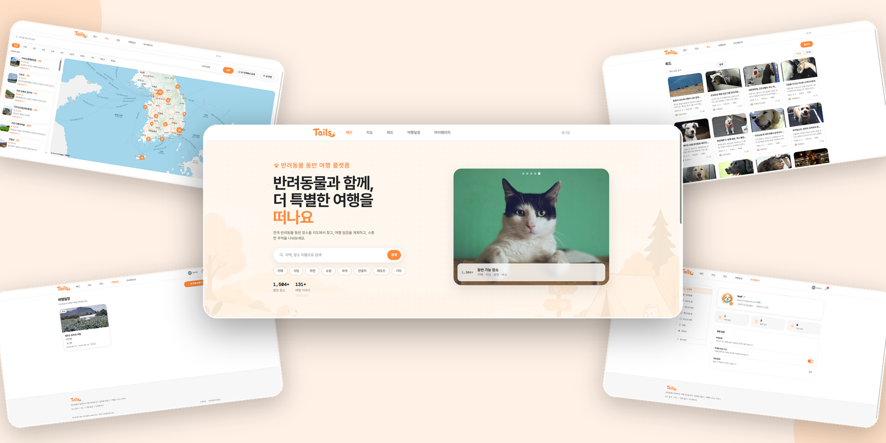

메인 프로젝트
팀 프로젝트

Tails
반려동물과 함께 여행할 수 있는 장소, 숙소, 맛집 정보를 검색하고 여행 일정을 계획·공유할 수 있는 서비스입니다. 기획을 맡아 서비스 방향을 정의하고, 장소 검색·개인화 추천 로직 설계부터 화면 구현까지 백엔드·프론트엔드를 아우르며 개발했습니다.
20개ERD 테이블 설계
4개외부 서비스 연동
3건트러블슈팅 해결 기록
- 반려동물 동반 가능 장소·리뷰·평점 검색
- 게시글·댓글 좋아요, 북마크 커뮤니티 기능
- 지도 기반 탐색 및 키워드·카테고리·반경 검색
- AWS 배포, Docker·Jenkins·GitHub Actions CI/CD 구축